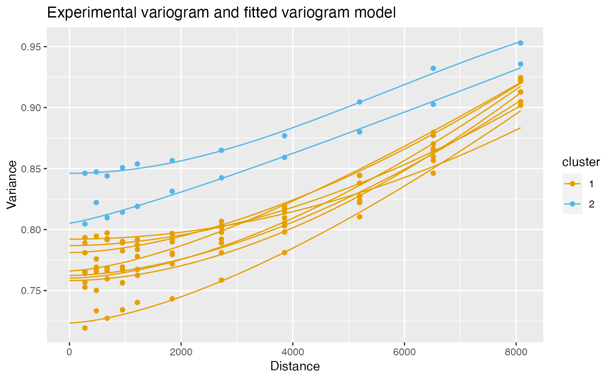

This function clusters variograms of features across samples to find patterns in decays in spatial autocorrelation. The fitted variograms are clustered as different samples can have different distance bins.
Usage
clusterVariograms(
sfe,
features,
BLUSPARAM,
n = 20,
sample_id = "all",
colGeometryName = NULL,
annotGeometryName = NULL,
reducedDimName = NULL,
swap_rownames = NULL,
name = "variogram"
)Arguments
- sfe
A
SpatialFeatureExperimentobject with correlograms computed for features of interest.- features
Features whose correlograms to cluster.
- BLUSPARAM
A BlusterParam object specifying the algorithm to use.
- n
Number of points on the fitted variogram line.
- sample_id
Sample(s) in the SFE object whose cells/spots to use. Can be "all" to compute metric for all samples; the metric is computed separately for each sample.
- colGeometryName
Name of colGeometry from which to look for features.
- annotGeometryName
Name of annotGeometry from which to look for features.
- reducedDimName
Name of a dimension reduction, can be seen in
reducedDimNames.colGeometryNameandannotGeometryNamehave precedence overreducedDimName.- swap_rownames
Column name of
rowData(object)to be used to identify features instead ofrownames(object)when labeling plot elements. If not found inrowData, then rownames of the gene count matrix will be used.- name
Name under which the correlogram results are stored, which is by default "sp.correlogram".
Value
A data frame with 3 columns: feature for the features,
cluster a factor for cluster membership of the features within each
sample, and sample_id for the sample.
Examples
library(SFEData)
library(scater)
library(bluster)
library(Matrix)
#>
#> Attaching package: ‘Matrix’
#> The following object is masked from ‘package:S4Vectors’:
#>
#> expand
sfe <- McKellarMuscleData()
#> see ?SFEData and browseVignettes('SFEData') for documentation
#> loading from cache
sfe <- logNormCounts(sfe)
# Just the highly expressed genes
gs <- order(Matrix::rowSums(counts(sfe)), decreasing = TRUE)[1:10]
genes <- rownames(sfe)[gs]
sfe <- runUnivariate(sfe, "variogram", features = genes)
clusts <- clusterVariograms(sfe, genes, BLUSPARAM = HclustParam(),
swap_rownames = "symbol")
# Plot the clustering
plotVariogram(sfe, genes, color_by = clusts, group = "feature",
use_lty = FALSE, swap_rownames = "symbol", show_np = FALSE)
